What is it: Awarded to the “player judged most valuable to his team.” This isn’t necessarily the best overall player, but rather the one who contributes most significantly to his team’s success.
For this trophy I chose to focus on the corsi percentage statistics because I think it is the best all encompassing statistic of how that player contributes to their teams overall performance (if I am understanding the statistic correctly). I started by looking at the Corsi % for each of the players.
Code
library(tidyverse)top_players <- OnIce.Skater %>%arrange(desc(CF.)) %>%top_n(30, CF.)ggplot(top_players, aes(x =reorder(Player,-CF.), y = CF.)) +geom_bar(stat ="identity") +theme_minimal() +labs(title ="Corsi(%) for Each Player", x ="Player", y ="Corsi (%)") +theme(axis.text.x =element_text(angle =90, hjust =1, vjust =0.5))
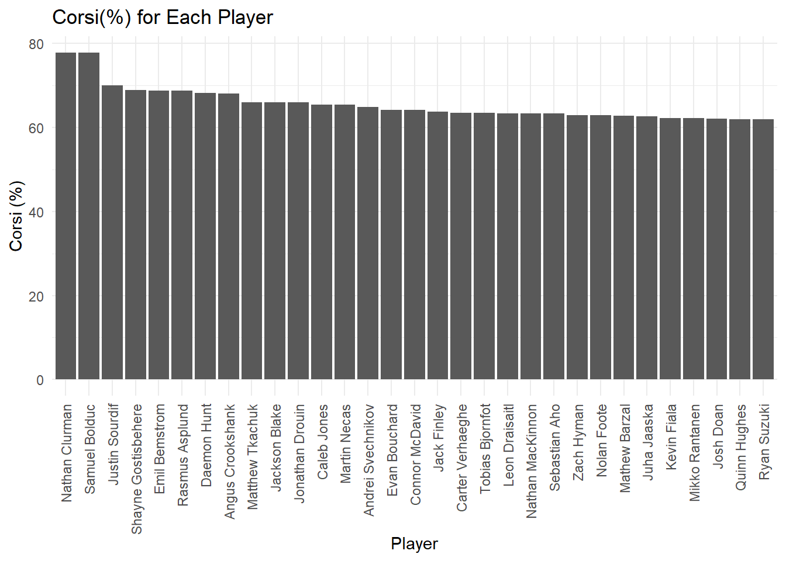
However, it arguable that individuals with less time on the ice or do not play as many games are not contributing as much to their teams success. I decided to show a scatterplot of the Corsi percentage compared to the players time spent on the ice during the game. This showed that some of the individuals with the highest Corsi score did not spend as much time on the ice.
Code
OnIce.Skater <- OnIce.Skater %>%mutate(TOI_per_GP = TOI / GP) top_players <- OnIce.Skater %>%arrange(desc(CF.)) %>%top_n(20, CF.)ggplot(top_players, aes(x = TOI_per_GP, y = CF.)) +geom_point(aes(color = Player), alpha =0.6) +theme_minimal() +labs(title ="Corsi(%) vs. Time played per Game",x ="Time played per Game",y ="Corsi (%)") +scale_x_continuous(breaks =seq(0, 30, by =2)) +theme(legend.position ="none", axis.text.x =element_text(angle =45, hjust =1))
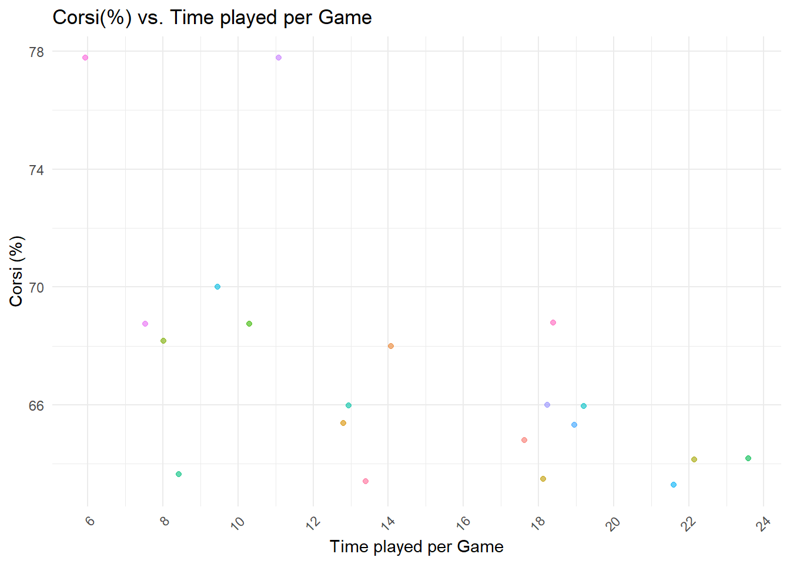
Because of this I chose to filter the dataset one more time to only include individuals who spent more than 16 minutes on the ice per game and then created a bar graph to view individuals with the highest corsi percentage within this group.
Code
top.indv <- top_players %>%filter(TOI_per_GP <=16 ) %>%arrange(desc(CF.)) %>%top_n(30, CF.)ggplot(top.indv, aes(x =reorder(Player, -CF.), y = CF.)) +geom_bar(stat ="identity") +theme_minimal() +labs(title ="Corsi(%) for Each Player", x ="Player", y ="Corsi(%)") +theme(axis.text.x =element_text(angle =90, hjust =1, vjust =0.5))
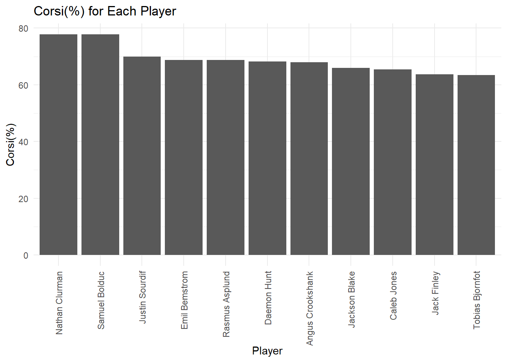
After seeing these results my top 5 picks would be:
Nathan Clurman
Samuel Bolduc
Justin Sourdif
Emil Bemstrom
Rasmus Asplund
Vezina Trophy
What is it: Presented to the goaltender “adjudged to be the best at this position.” NHL general managers vote on this award.
I wanted to start of by looking at the statistics fo the GSAA (goals saved above average). To me this seemed like the most valuable statistic to determine which goaltender is the best at what they do. I compared the GSAA to each players time spent on the ice per games played again.
Code
Goalie <- Goalie %>%mutate(TOI_by_GP = TOI / GP) top_goalie <- Goalie %>%arrange(desc(GSAA)) %>%top_n(30, GSAA)ggplot(top_goalie, aes(x = TOI_by_GP, y = GSAA)) +geom_point(aes(color = Player), alpha =0.6) +theme_minimal() +labs(title ="Goals Saved Above Average vs. Time player per Game",x ="Time played per Game",y ="GSAA") +scale_x_continuous(breaks =seq(40, 65, by =5)) +# Custom x-axis intervals from 15 to 30 in steps of 5theme(legend.position ="none", axis.text.x =element_text(angle =45, hjust =1))
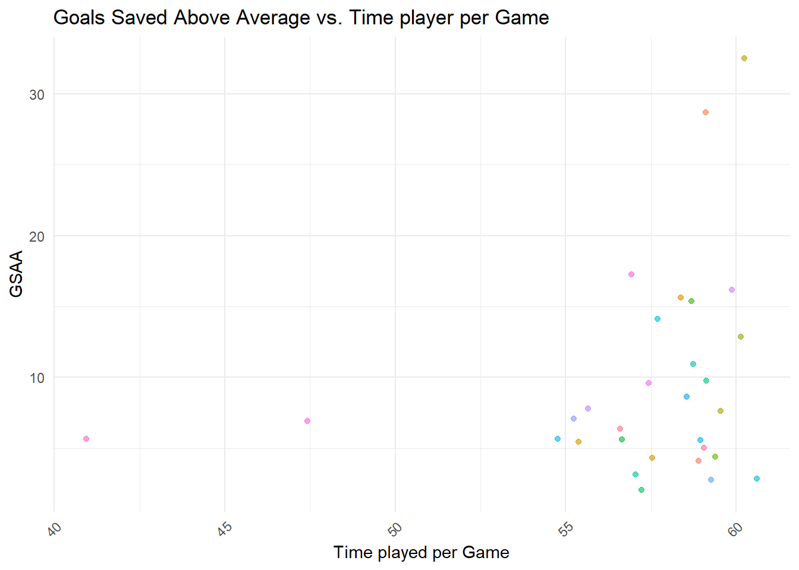
Since most of the players averaged above 50 TOI/GP, I decided to remove anyone who spent less than 50 TOI/GP because they will most likely have skewed numbers. I then decided to compare the GSAA to the high danger GSAA.
Code
Goalie_filtered<- Goalie %>%filter(TOI_by_GP >=50)top_goalie <- Goalie_filtered %>%arrange(desc(GSAA)) %>%top_n(30, GSAA)ggplot(top_goalie, aes(x = HDGSAA, y = GSAA)) +geom_point(aes(color = Player), alpha =0.6) +theme_minimal() +labs(title ="Goals Saved Above Average vs. High Danger Goals Saved Above Average ",x ="HDGSAA",y ="GSAA") +scale_x_continuous(breaks =seq(0, 65, by =10)) +# Custom x-axis intervals from 15 to 30 in steps of 5theme(legend.position ="none", axis.text.x =element_text(angle =45, hjust =1))
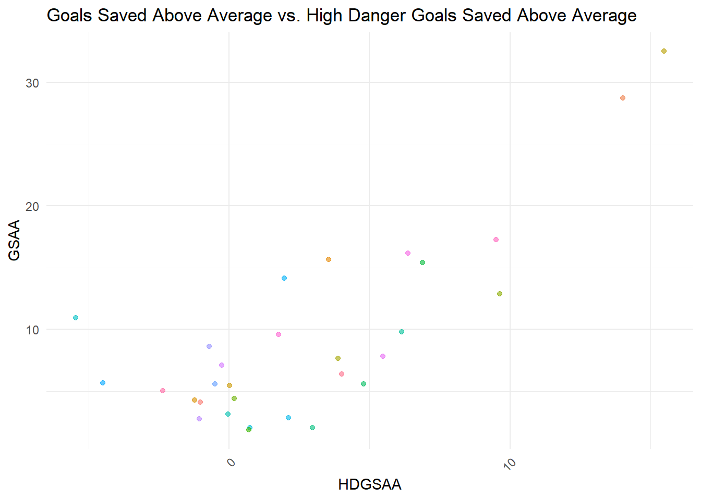
I feel like most peoples ability to save low and medium danger goals are probably pretty high as it, is so quantifying their overall ability with GSAA is more helpful. Where the skill really comes in is in the high danger situations where the team is counting on the goalie alone to prevent the other team from scoring. Based on this graph I want to filter out individuals who fall below a 10 for GSAA to determine who the best goalie is.
Code
Goalie_final <- Goalie_filtered %>%filter(GSAA <=10) %>%arrange(desc(HDGSAA)) %>%top_n(30, HDGSAA)ggplot(Goalie_final, aes(x =reorder(Player, -HDGSAA), y = HDGSAA)) +geom_bar(stat ="identity") +theme_minimal() +labs(title ="High Danger GSAA for Each Player", x ="Player", y ="HDGSAA") +theme(axis.text.x =element_text(angle =90, hjust =1, vjust =0.5))
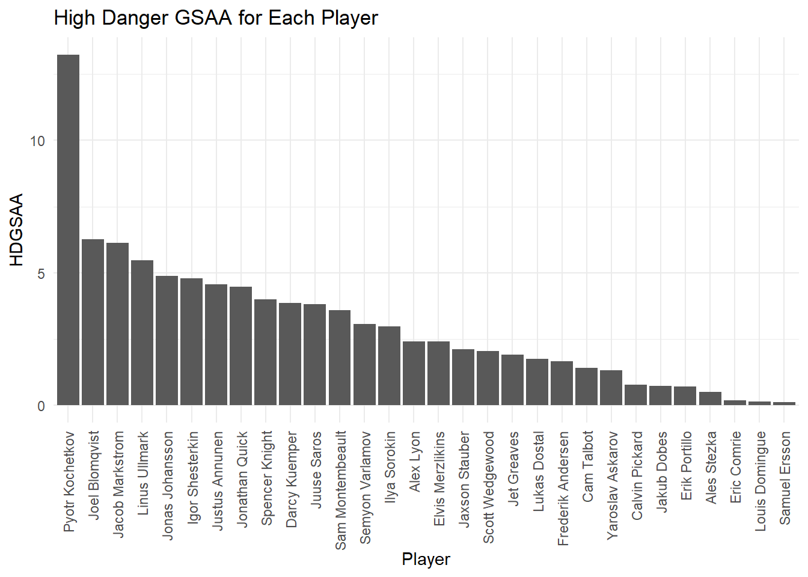
Based on these results my nominations for this trophy would be:
Pyotr Kochetkov
Joel Blomqvist
Jacob Markstrom
Linus Ullmark
Jonas Johansson
(way different than our results in class, but what do I know it makes sense to me)
James Norris Memorial Trophy
What is it: Awarded to the defenseman who demonstrates “the greatest all-around ability” at the position.
First I wanted to compare the percentages of SA and GA for each defensive player while they are on the ice. Similar to many of the other graphs, this could not be comparable because of the amount of time played or games play by each player. So first I looked at the amount of time each player spent on the ice per game.
Code
top.defense <- OnIce.Skater %>%filter(Position =="D") %>%mutate(TOI_by_GP = TOI / GP) %>%arrange(desc(TOI_by_GP)) %>%top_n(30, TOI_by_GP)ggplot(top.defense, aes(x =reorder(Player, -TOI_by_GP), y = TOI_by_GP)) +geom_bar(stat ="identity") +theme_minimal() +labs(title ="Time Played per Game for Each Player", x ="Player", y ="TOI/GP") +theme(axis.text.x =element_text(angle =90, hjust =1, vjust =0.5))
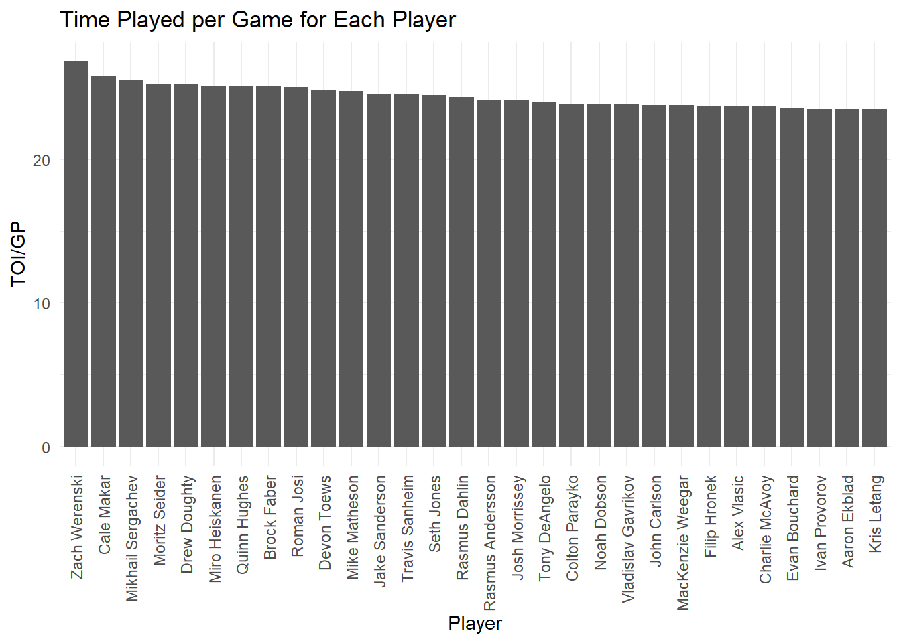
From the new filtered dataset, I looked at the amount of goals against each persons team vs the amount of shots against the individuals teams. Players with lower scores mean that they’re defensive efforts are contributing significantly to the teams success. From this graph I decided to filter my final results to the individuals with less than 75 GA and 600 SA.
Code
ggplot(top.defense, aes(x = SA, y = GA)) +geom_point(aes(color = Player), alpha =0.6) +theme_minimal() +labs(title ="Goals Against vs Shots Against ",x ="Shots Against (SA)",y ="Goals Against (GA)") +theme(legend.position ="none")
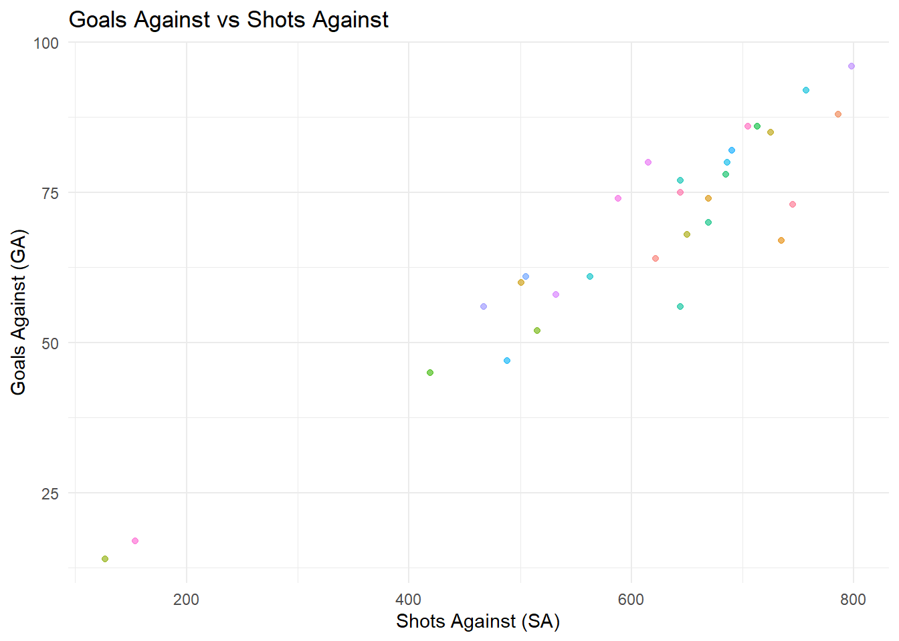
Lastly, I decided to look at the count of scores against the team from my filtered dataset. These individuals have spent the most time on the ice during the games, had the least amount of goals against and shots against their team, as well as the lowest chance of scores against their team while they were on the ice.
Code
win.defense <- top.defense %>%filter(GA <=75 ) %>%filter(SA <=600 ) %>%arrange(desc(SCA)) %>%top_n(30, SCA)ggplot(win.defense, aes(x =reorder(Player, SCA), y = SCA)) +geom_bar(stat ="identity") +theme_minimal() +labs(title ="Scoring Chances Against for Each Player", x ="Player", y ="SCA") +theme(axis.text.x =element_text(angle =90, hjust =1, vjust =0.5))
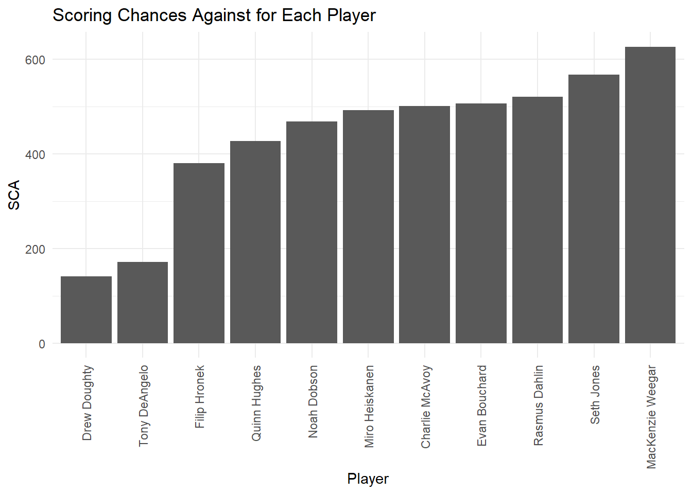
Because of these results this would be my ballet:
Drew Doughty
Tony DeAngelo
Filip Hronek
Quinn Hughes
Noah Dobson
Calder Memorial Trophy
What is it: Given to the player “adjudged to be the most proficient in his first year of competition.” This is essentially the rookie of the year award.
For this trophy I filtered it similarly to Hart Memorial Trophy. I filtered the dataset to only include the top 50 players that had the most time played per game. I then compared this time to their overall Corsi percentage. I chose to filter the dataset again to only include the players that had spent more than 19 minutes on the ice per game because that time frame seemed to be when the Corsi statistics start to fall due to players spending more time on the ice.
Code
OnIce.rookie <- OnIce.Skater.Rookie %>%mutate(TOI_per_GP = TOI / GP) top.rookie <- OnIce.rookie %>%arrange(desc(TOI_per_GP)) %>%top_n(50, TOI_per_GP)ggplot(top.rookie, aes(x = TOI_per_GP, y = CF.)) +geom_point(aes(color = Player), alpha =0.6) +theme_minimal() +labs(title ="Corsi vs. Time played per Game",x ="Time played per Game",y ="Corsi (%)") +scale_x_continuous(breaks =seq(15, 30, by =1)) +theme(legend.position ="none", axis.text.x =element_text(angle =45, hjust =1))
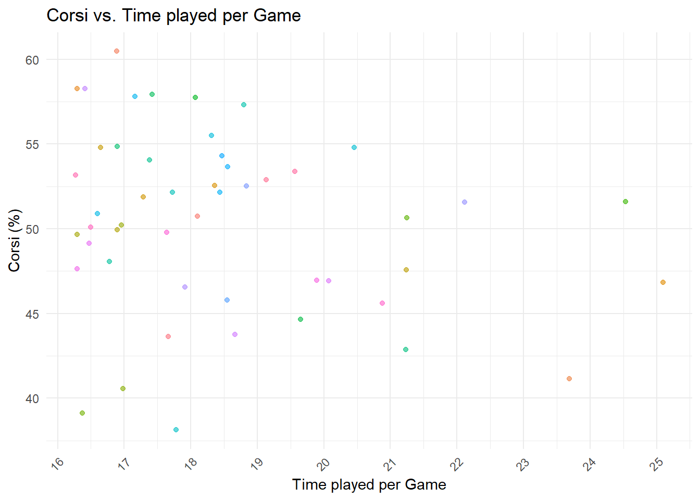
I then created a bargraph to view the players with the highest Corsi percentage from this group.
Code
top.rookie.cf <- top.rookie %>%filter(TOI_per_GP <=19 ) %>%arrange(desc(CF.)) %>%top_n(30, CF.)ggplot(top.rookie.cf, aes(x =reorder(Player, -CF.), y = CF.)) +geom_bar(stat ="identity") +theme_minimal() +labs(title ="Corsi(%) for Each Player", x ="Player", y ="Corsi(%)") +theme(axis.text.x =element_text(angle =90, hjust =1, vjust =0.5))
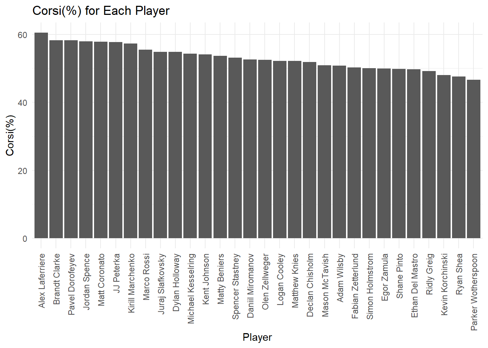
Based on these results my ballot would be:
Alex Laferriere
Brandt Clarke
Pavel Dorofeyev
Jordan Spence
Matt Coronato
Frank J. Selke Trophy
What is it: Awarded to the forward who best excels in the defensive aspects of the game.
I started by filtering the On Ice dataset to just the forward positions and chose to analyze it similar to how I analyzed the defensive player data for the James Norris Memorial Trophy. I started by looking at the amount of time each player spent on the ice during each game and only kept the top 30.
Code
top.ofd <- OnIce.Skater %>%filter(Position !="D") %>%mutate(TOI_by_GP = TOI / GP) %>%arrange(desc(TOI_by_GP)) %>%top_n(30, TOI_by_GP)ggplot(top.ofd, aes(x =reorder(Player, -TOI_by_GP), y = TOI_by_GP)) +geom_bar(stat ="identity") +theme_minimal() +labs(title ="Time Played per Game Values for Each Player", x ="Player", y ="TOI/GP") +theme(axis.text.x =element_text(angle =90, hjust =1, vjust =0.5))
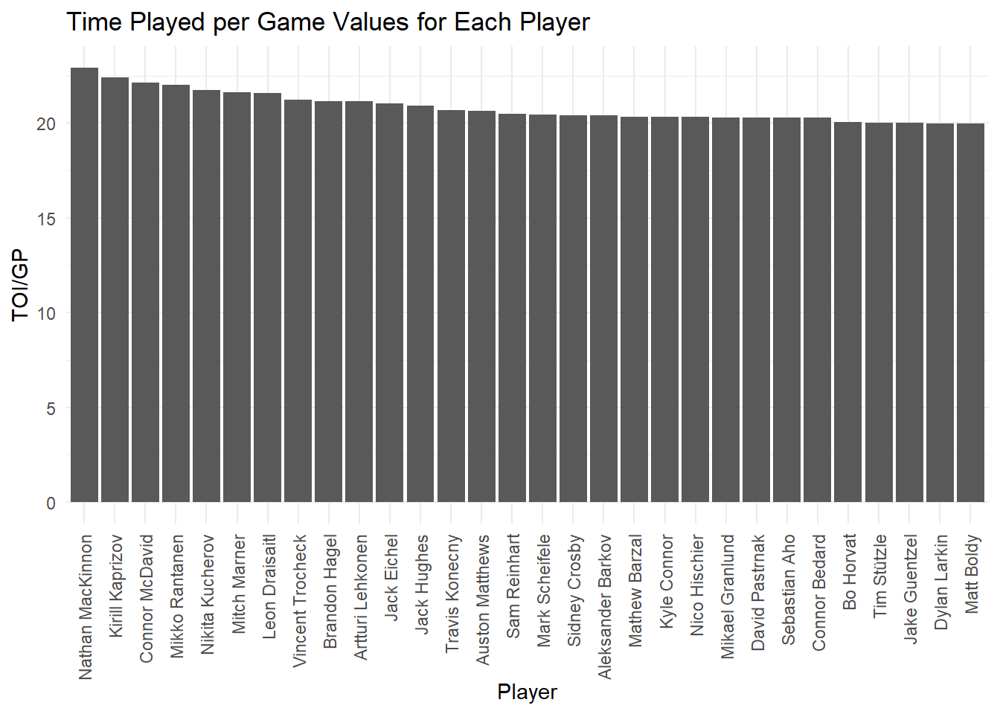
I then looked at the number of goals and shots against each players teams while they were on the ice from the filtered data set. There are some players that have higher shots against their team, but less goals against their team. I want to select from the lowest values from both of these values so I filtered for the less the 60 shots against their team and less than 600 goals against their team.
Code
ggplot(top.ofd, aes(x = SA, y = GA)) +geom_point(aes(color = Player), alpha =0.6) +theme_minimal() +labs(title ="Goals Against vs Shots Against ",x ="Shots Against (SA)",y ="Goals Against (GA)") +theme(legend.position ="none")
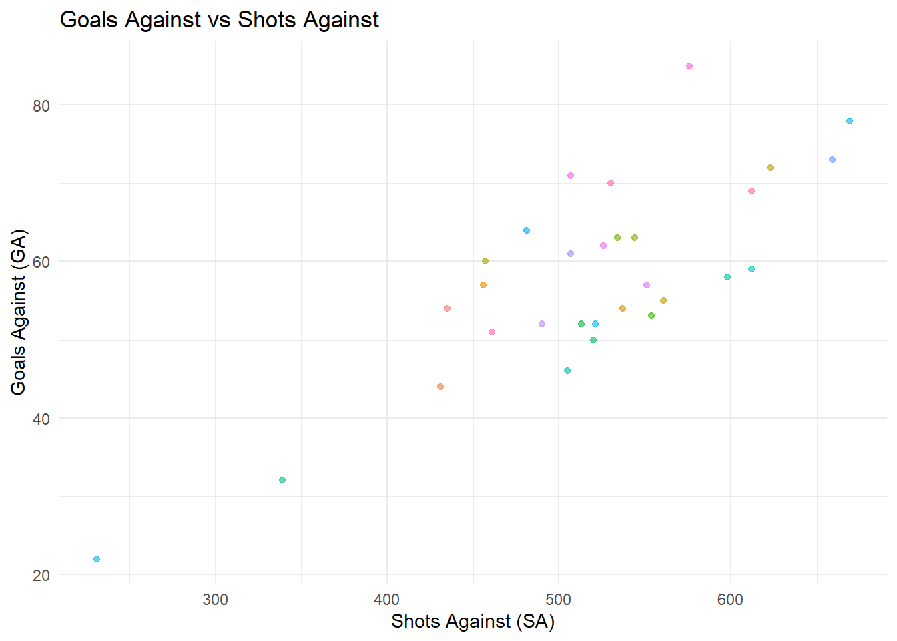
Lastly I wanted see the overall scores against the individuals teams from the filtered data set of the most time played per game with the least amount of shots and goals against their team.
Code
win.ofd <- top.ofd %>%filter(GA <=60 ) %>%filter(SA <=600 ) %>%arrange(desc(SCA)) %>%top_n(30, SCA)ggplot(win.ofd, aes(x =reorder(Player, SCA), y = SCA)) +geom_bar(stat ="identity") +theme_minimal() +labs(title ="SCA for Each Player", x ="Player", y ="SCA") +theme(axis.text.x =element_text(angle =90, hjust =1, vjust =0.5))
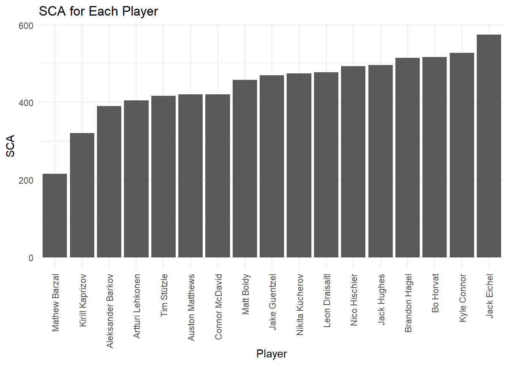
Matthew Barzal
Kirill Kaprizov
Aleksander Barkov
Artturi Lehkonen
Tim Stutzle
Lady Byng Memorial Trophy
What is it: Presented to the player who exhibits “the best type of sportsmanship and gentlemanly conduct combined with a high standard of playing ability.”
To get at “sportsmanship and gentlemanly conduct” I want to look at the number of penalties and misconducts by each player and only look at the playing abilities of those with lower counts. Since minor penalities are less aggressive I chose to focus on just the major penalties
Code
ggplot(Indivdual.Skater, aes(x = Misconduct, y = Total.Penalties)) +geom_point(aes(color = Player), alpha =0.6) +theme_minimal() +labs(title ="Sportmanship and Gentlemanly Conduct",x ="# of Misconducts",y ="Total Penalites") +theme(legend.position ="none")
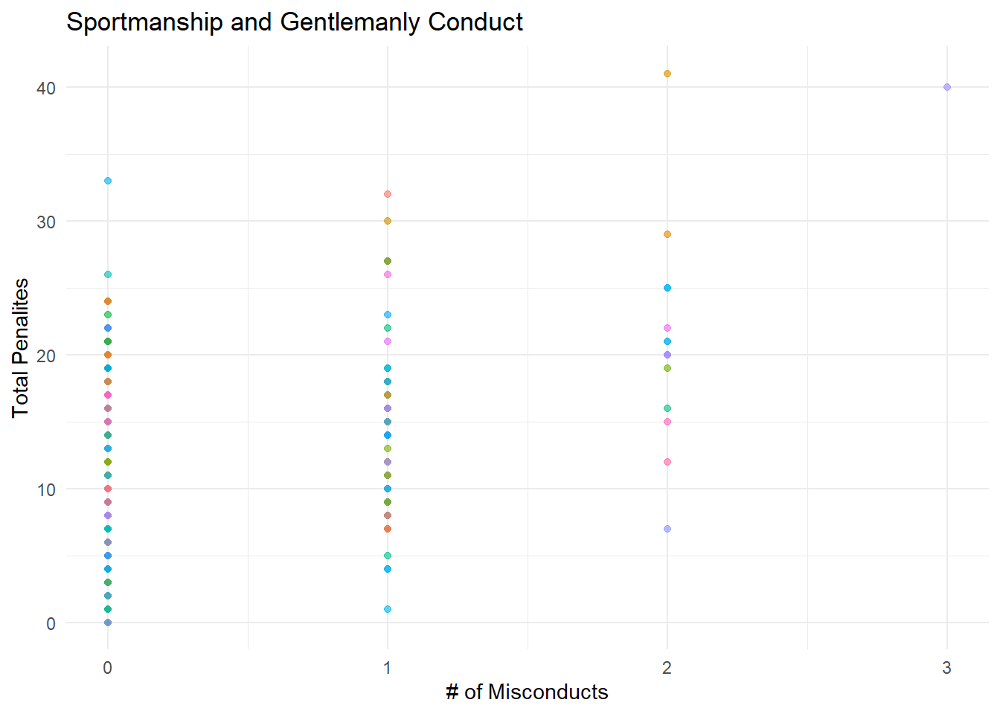
There are not many players with misconducts, so I am going to remove any players that have at least 1. Since we are aiming for players with the most gentlemanly like conduct I might as well filter out anyone with any penalties at all as well. I then took the top 30 players who have spent the most time on the ice per game. To compare their overall playing ability I am then going to look at their corsi percentage.
Code
good.guys <- Indivdual.Skater %>%filter(Misconduct <=0 ) %>%filter(Total.Penalties <=0 ) %>%mutate(TOI_by_GP = TOI / GP) %>%arrange(desc(TOI_by_GP)) %>%top_n(30, TOI_by_GP)good.guys <- good.guys %>%left_join(y = OnIce.Skater,by ="Player")View(good.guys)ggplot(good.guys, aes(x =reorder(Player, -CF.), y = CF.)) +geom_bar(stat ="identity") +theme_minimal() +labs(title ="Corsi(%) for Each Player", x ="Player", y ="Corsi(%)") +theme(axis.text.x =element_text(angle =90, hjust =1, vjust =0.5))